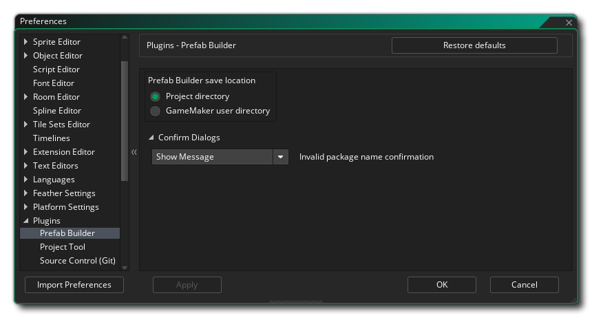

The Prefab Builder lets you create Prefab Collections for use among your projects and for sharing with other developers.
Using the Package Manager, navigate to the "Plugins" source from the drop-down menu and install the "Prefab Builder" package.
SCREENSHOT
Once installed, enable it with the checkbox and restart the IDE when you are prompted.
Creating your own Prefab Collection starts way before you open the Prefab Builder. You must plan and structure the project according to the intended use of your Prefab Collection.
This includes doing the following:
Prefab Collections can themselves make use of other Prefab Collections, so ensure such Collections are properly added and referenced in your project.
Once your project is ready, use the Prefab Builder to export it as a Prefab Collection.
Scripts in your Prefab Collection may export Enums, Macros and Script Functions using the following syntax:
#export symbol1,symbol2,symbol3,...
Any project that has a reference to such a Collection can use the exported symbols in code, e.g. to make use of an Enum/Macro or call a Script Function.
A function exported with the above syntax may implicitly call any other functions or constants from the Collection's included scripts, without those symbols needing to be exported. This means you only export those functions and constants which the user will explicitly call.
See the following example of a Script included in a Prefab Collection:
#export HelloWorld,Vector3,LIB_RELEASE_MODE
function HelloWorld(text){
PrintMessage($"Hello World!\n{text}");
}
function Vector3(_x=0,_y=0,_z=0) constructor
{
x=_x;
y=_y;
z=_z;
PrintMessage($"Vector3 created with values: {x},{y},{z}")
}
function PrintMessage(text)
{
show_debug_message($"{LIB_NAME}::{text}")
}
#macro LIB_NAME "TEST LIBRARY"
enum LIB_RELEASE_MODE
{
BETA,
PUBLIC
}
This Script asset is not marked as visible, only included, however it can be used in a project where a reference to the Collection has been added (see: Referencing Prefab Assets In Code).
The Script exports two functions: HelloWorld and constructor Vector3, along with an enum LIB_RELEASE_MODE.
Both functions make use of a PrintMessage function which is placed within the same Script but not explicitly exported. This will still work, as it is part of the Collection (it may even be placed in a different Script as long as it is included).
The PrintMessage function then references the macro LIB_NAME which is also not exported but is part of the Script.
In a project that references this Collection, you can call the exposed HelloWorld and Vector3 functions and they should work as expected.
Open the Prefab Builder from the Tools menu:
SCREENSHOT
SCREENSHOT
Here you must enter the following required details for your Prefab Collection:
You can then enter optional details including the Publisher Name, Version and Descriptions.
The "Package Dependencies" section shows the packages that are being used by the current project, so they are included in the Collection. You can additionally attach a License file to your Collection and specify the minimum IDE versions required for this Collection.
SCREENSHOT
This section lets you pick the assets that will be included and exposed with the Prefab Collection. You can mark assets as "Included" or "Visible".
Included assets are included in the exported Prefab Collection. Visible assets are included and exposed in the Prefab Library so they can be dragged into a project by a user of the Collection.
An Included asset may be referenced by an asset that is Visible. For example, obj_player may be visible so a user could drag it into their Room, and obj_player, in its Create event, creates an instance of obj_camera which is not exposed to a user of the Collection, however it is still used at runtime. In such a scenario, obj_camera would only be marked as Included.
The Dependencies view displays any assets (local or referenced through another Collection) that are attached to the selected asset in the Assets view, e.g. Sprites used by an Object or Sounds used in a Sequence.
Any assets that are required for an asset but not automatically detected by the IDE, can be added using the Add button. Such assets will be marked as Included but not Visible (unless you choose to mark them as Visible yourself).
Once your Prefab Collection details are ready, click on "Package and Install". This will export a .yymps file and show the following prompt:
SCREENSHOT
Here, you can click on "Install Prefab" which will install the Prefab Collection in your Prefab Library, ready for use in other projects:
SCREENSHOT
Preferences for the Prefab Builder will appear under Preferences -> Plugins, containing the following options:
